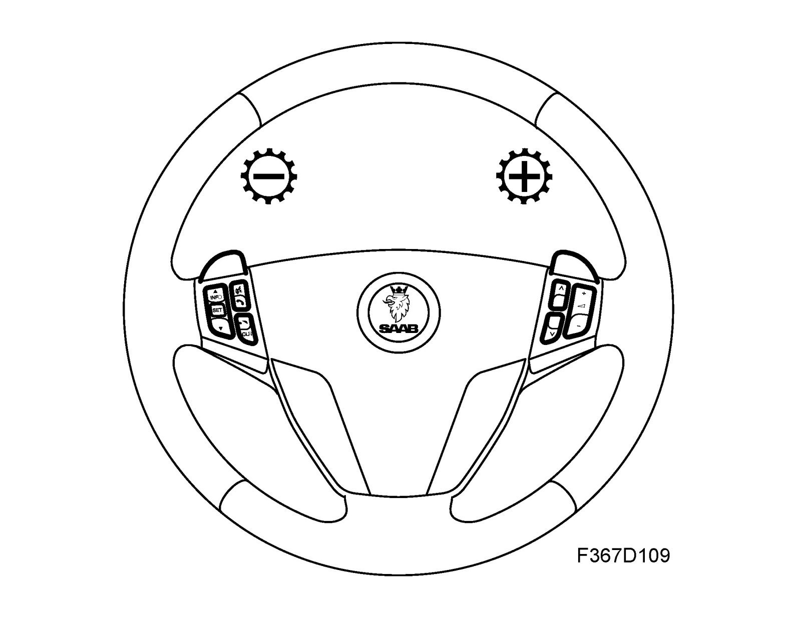
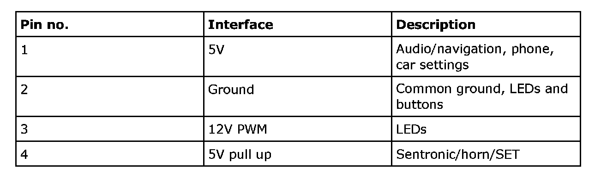
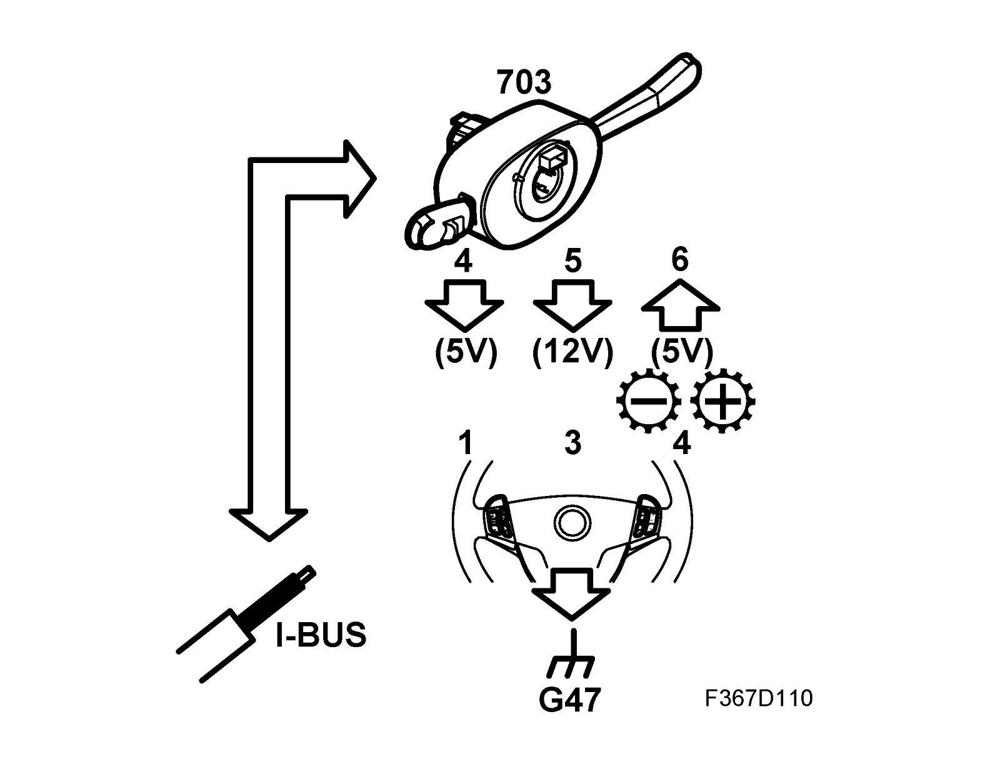
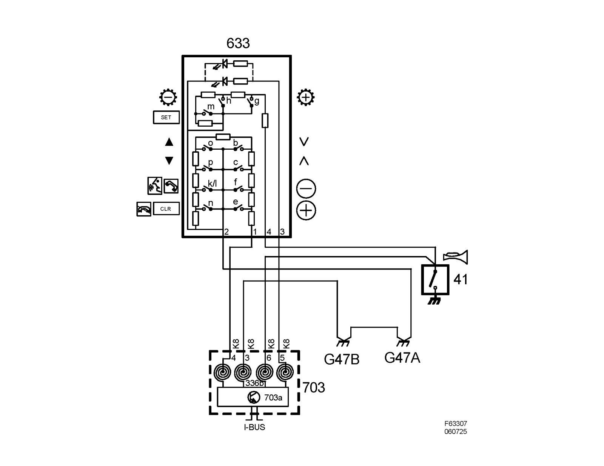

Switch Unit, Steering Wheel
Switch unit, steering wheel (633)Location
Switch unit, steering wheel (633)
Main function
Control of audio/navigation, phone, car settings, up and down shifting of automatic transmission and horn switch.
Type
The steering wheel buttons are resistive multiplexed (5V) and divided into 2 circuits; switches for Sentronic, horn and SET in one circuit and other buttons in the second. The 2 circuits have a common ground from the CIM. Each circuit has an extra resistor for diagnosing an open circuit.
The lead for the Sentronic/horn/SET is fed with 5V via a 560O resistor integrated in CIM. When the horn switch closes, the line is grounded and the voltage drops to 0V. For up and down shifting respectively there are 2 switches and 2 resistors: one for up and one for down shifting. Depending on the switch being pressed, the aggregate resistance will change and thereby also the voltage.
The buttons have integrated LEDs so that the symbols can be seen in the dark. The LEDs are powered by the CIM. All the leads go via a spring-loaded contact to CIM. CIM sends the status of the horn and the other buttons on the bus.

Electrical connections
The CIM (steering column control module) supplies 5 volts to the keypad, for audio/navigation, phone and car settings on pin 1 and for Sentronic/horn/SET on pin 4. Common ground is supplied to pin 2. Depending on the switch pressed, the aggregate resistance will change and thereby also the voltage.
Pin 3 receives a 12 volt PWM signal to control the brightness of the LEDs.


Wiring diagram, power supply
